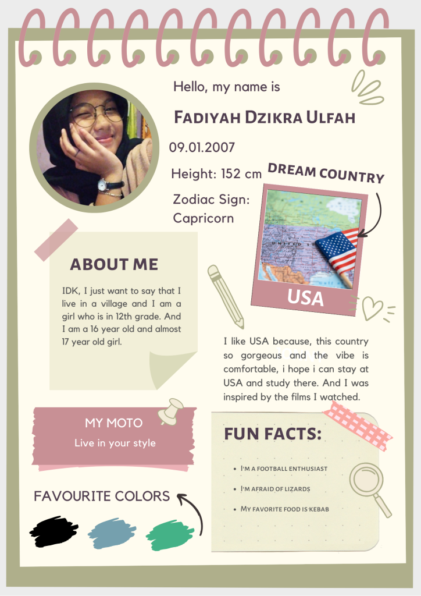

For You Information

¡Hola! Namaku Fadiyah Dzikra Ulfah, but you can call me Fadiyah. Aku lulusan SMK Negeri 1 Bakam dengan Program Keahlian TKJ, dan sekarang berkuliah di Program Studi Sastra Inggris, Universitas Bangka Belitung.
Website ini adalah tempatku menyimpan cerita, mulai dari perjalanan lulus sekolah, keputusan-keputusan besar, sampai hal-hal receh yang kusuka.
Acerca de Mí
Sedikit tentang aku
Aku lahir di Sungailiat, 9 Januari 2007. Aku anak pertama dari 4 bersaudara, which means all my younger siblings are boys.
Hal-hal yang kusuka
- Mendengarkan lagu
- Menonton film
- Football enthusiast
- Penggemar Setan Merah
Mimpi yang sedang dikejar
- Menyelesaikan kuliah dengan baik.
- Mengasah kemampuan verbal dan bahasa Inggris.
- Suatu hari bisa mengunjungi negara impianku, USA.
Data Singkat
| Keterangan | Isi |
|---|---|
| Nama lengkap | Fadiyah Dzikra Ulfah |
| Tempat, tanggal lahir | Sungailiat, 9 Januari 2007 |
| Asal sekolah | SMK Negeri 1 Bakam (TKJ) |
| Kampus | Universitas Bangka Belitung |
| Program studi | Sastra Inggris |
| Zodiak | Capricorn |
| Negara impian | USA |
